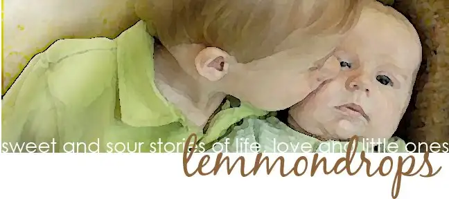

When I started Peace Garden Mama nearly a year ago, I did so with the intention of creating a place to share my insights into the parenting journey, to offer encouragement to other parents in both the darker and lighter moments of this walk (which, at times, can seem more of a slog or race). Oftentimes, those insights have been enhanced through connecting with others who have either “been there, done that,” or who are currently on a parallel (though unique) walk along the parenting path. One of the many mothers who has inspired my own trek has been Emilie Lemmons, whom I’ve mentioned quite a few times on here recently. This morning, an article written by former Fargoan Molly Guthrey Millett appeared on the front page of the St. Paul Pioneer Press. The article is about Emilie, her family and her blog, “Lemmondrops,” where Emilie chronicled with honesty and grace her daily attempts to maneuver through parenting two young boys while dealing with cancer.

{kind=link}
Reading about how Emilie used her blog to sort through the sometimes messiness of her life reminded me of why I blog. Reading about how she sometimes questioned bringing some of her private life into a public forum reminded me of my own hesitations in “going public.” Likewise, her revelation that she did it anyway because it was “in her blood” caused me to nod in agreement. Even if we writers sometimes question our purpose, there is something strong that fuels us in sharing our stories, and so we do; oftentimes with caution, but always with the hope that it will benefit someone, even if, on some days, the person it most benefits is us.
When I picked up a copy of the paper this morning, I knew Emilie’s article would be in it but I wasn’t expecting it to be on the front page. Seeing it there took my breath away, and I experienced a grieving moment in the middle of Sunmart. I did my best to keep my emotions to myself while clutching the newspaper and setting off to attend to a more practical matter — searching for Sprite for my sick son. And then, when I placed the newspaper and the couple other items I planned to purchase in front of the cashier, I felt like the world should stop, like I should blurt out, “This isn’t just any newspaper. That’s Emilie on the front. The world isn’t the same without her, you know.” We always wish the world could stand still when death happens. It seems pertinent, and yet it never does. It keeps rolling along. And, I guess, thankfully so, or we would stop, too. But sometimes, we need to stop, just for a moment or two or more.
In the past six months, it might have seemed like this has become a sort of death blog, what with all the reports and ruminations of loss. But I assure you, it is meant to be the opposite of that. I am here to share the stuff of life. It’s just that sometimes, death is the stuff of life. So, thank you for allowing me to share these bits about Emilie and others who have left this world too soon in recent weeks and months. May those who have left us, recently or in the past, be guiding lights for us for what we, too, will experience someday, and remind us how best to live on earth as long as we are given the chance, one day at a time.